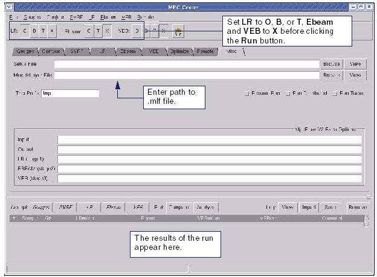
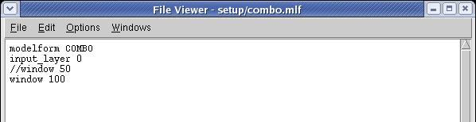

Input a model
or layer file in MPC Center.
Procedure
- Click the Misc tab (see Figure 1).
- Set LR to O, B, or T and Ebeam, and VEB to X.
Figure 1. Misc Tab (Long Range)
- In the Misc tab,
enter the path to the .mlf file (see Figure 2 for an example .mlf file) in the Model/Layer File field.
Figure 2. Example Mask Layer
File (.mlf) for Long Range Model